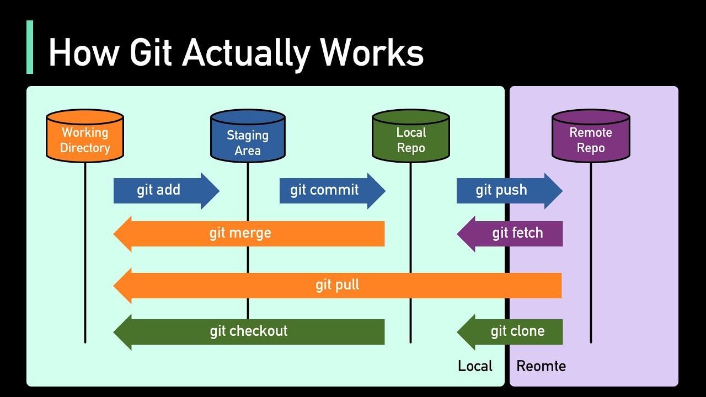

Git es un sistema de control de versiones distribuido, lo que significa que un clon local del proyecto es un repositorio de control de versiones completo. Estos repositorios locales totalmente funcionales facilitan el trabajo sin conexión o de forma remota. Los desarrolladores confirman su trabajo localmente y, a continuación, sincronizan su copia del repositorio con la copia en el servidor. Este paradigma difiere del control de versiones centralizado en el que los clientes deben sincronizar el código con un servidor antes de crear nuevas versiones de código.
